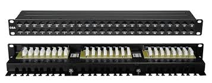
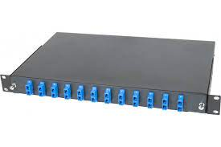
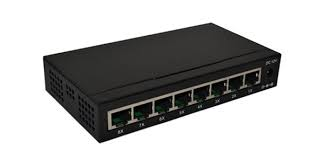
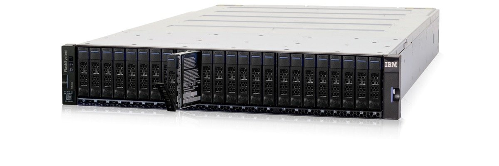

Nous avons plutôt vu la définition du réseau qui est l'interconnexion d'équipements informatiques. Pour permettre cette connexion (l'échange d'information), il est obligatoire de s'équiper d'éléments pouvant relier les différents hôtes pour qu'ils aient la possibilité de parler entre eux, aussi ils ne doivent pas être choisi au hasard
car le réseau fonctionne selon des régles spécifiques.
On voit donc que l'architecture du réseau requiert au moins deux éléments à savoir ce qui veulent communiquer (les hôtes) et ceux qui leur permettent d'échanger (les supports).
Essayons de voir en détails le rôle et le fonctionnement de chacun d'entre eux.
- Le cable à paire torsadée
- UTP (Unshielded Twisted Pair): est un câble sans blindage, la seule couverture étant le plastique qui entoure les brins.
- FTP (Foiled Twisted Pair): contient une feuille en aluminium à l'intérieur entourant les brins pour leur donner plus de sécurité par rapport aux coupures et aux interférences.
- STP (shielded Twisted Pair): identifiable grâce au blindage des pairs dont chacune est entourée par sa propre couverture d'aluminium.
- La fibre optique
- La fibre multimode
- La fibre monomode
- Quelques éléments de connectivité
- Le panneau de brassage
- Le tiroir optique
- Le coffret
Facilement reconnaissable avec ses quatres paires de fils (techniquement on parle de brin) torsadées par paire à savoir l'orange et l'orange-blanc, le vert et le vert-blanc, le bleu et le bleu-blanc, le marron et le marron-blanc qui jouent chacune un rôle précis raison pour laquelle ils sont disposées dans un ordre spécifique dans le connecteur rj45 qui permet de brancher le câble au niveau des ports des périphériques. Pour connaitre le dispositif a adopté, il faut se référer à deux normes le T568A qui les place comme suit: vert-blanc, vert, orange-blanc,bleu,bleu-blanc;orange,marron-blanc,marron et le T568B: orange-blanc,orange,vert-blanc,bleu,bleu-blanc,vert,marron-blanc,marron. La torsade sert à limiter la diaphonie (interférence entre les brins) pour assurer l'intégrité des données à transférer, de même que la couverture des câbles que l'on peut retrouver sous différents formes chacunes ayant son nom pour l'identifier:
NB: un câble avec les deux extrémités ayant le même dispositif au niveau des connecteurs (par exemple les deux suivent la norme T568B) est appelé câble droit et on l'utilse pur connecter deux équipements remplissant des rôles différents comme un ordinateur et un switch, si leux extrémités sont différents, on parle de câble croisé qui sert à relier deux noeuds identiques par exemple deux ordinateurs. Mais avec l'avancée de la technologie, les nouvelles cartes sont capables de détecter le schéma à suivre gràce à l'Auto MDX ce qui fait que partout on peux utiliser un câble droit.
Aussi la distance limite pour le tirage de ce câble est de 90 métres (mesure de précaution), pour aller au-dela, on utilise un répéteur de signal.


Elle est utilisée pour relier de longues distances difficiles à faire avec les paires torsadées. Elle est constituée d'un brain de verre fine et fragile raison pour laquelle on l'entoure de plusieurs couches de protection et cette architecture fait qu'elle a une grnade tolérence aux interférences. On en retrouve selon deux modes:
Le câble multimode présente une âme particulièrement large qui permet le passage de plusieurs modes de lumière. En d’autres termes, différents types de données peuvent être transmises.
Le câble multimode se présente en deux dimensions et selon cinq variétés : 62,5 microns OM1, 50 microns OM2, 50 microns OM3, 50 microns OM4 et 50 microns OM5. (OM signifie « mode optique ».) Tous disposent d'un revêtement d’un diamètre de 125 microns, mais le câble de 50 microns présente une âme
plus petite (la portion chargée de la transmission de la lumière dans la fibre optique).
Bien que tous puissent être utilisés de la même façon, le câble de 50 microns, notamment les versions OM5 et OM3/OM4 optimisées pour le faisceau laser, autorise des liaisons plus longues et/ou des vitesses supérieures. Il est donc recommandé pour les installations fixes (dorsales, liaisons horizontales et entre plusieurs bâtiments) et nouvelles. Les câbles OM3, OM4 et OM5 peuvent aussi être utilisés avec des sources LED et laser.
Les câbles multimodes sont disponibles en différentes couleurs, ce qui permet de les reconnaître facilement. L’OM3 est généralement turquoise, l’OM4 est parfois violet Erika (aussi appelé violet Heather au Royaume-Uni), ce qui permet de le différencier de l’OM3. L’OM5, dernière génération de fibre optique multimode est vert.
A la différence du multimode, le câble en fibre optique monomode ne présente qu'un seul type de diffusion : une seule longueur d’onde dans l’âme du câble. Il n’y a donc aucune interférence ni aucun chevauchement entre les différentes longueurs d’onde, comme tel est le cas avec le câble multimode. Le câble monomode (OS2) dispose d'une âme en fibre de verre bien plus mince (8 - 10 microns) que la version multimode. Il n’autorise le passage que d’un seul signal lumineux ou mode de transmission. (OS signifie « monomode optique ».) Puisqu’une seule longueur d'onde passe dans l’âme, la fibre optique monomode réoriente la lumière vers le centre au lieu de simplement la faire rebondir sur les bords comme tel est le cas avec la fibre multimode. L’OS1 est utilisé pour les câbles à gainage serré propres à un même site alors que l’OS2 est utilisé avec des tubes assemblés. Le câble monomode est presque toujours jaune. Il est donc facile à identifier. Elle peut aller jusqu'à 40 kilométres sans perturber le signal.
En plus ds câbles, il existe d'autres équipements qui aident à la bonne installation et à un aménagement garantissent une certaine sûreté.
Il est le point d'arriver des câbles. On utilisera des cordons pour relier chaque port correspondant à un câble au port du switch adéquat.
Il a presque le même rôle que le panneau à la différence qu'il n'admet que les fibres. leur liaison au switch se fera grâce à un jarretiére.

Aussi appelé armoire en fonction de la taille, il est le point de rassemblement de tous les équipements d'interconnexion (switch, tiroir optique, routeur...). Sa taille se mesure en U.
On divise le nombre de trous par trois pour connaitre le nombre de U donc il faut bien connaitre le nombre d'équipements à y placer plus une marge de réserve avant de l'acheter.
Il est l'élément central d'une topologie en étoile, c'est par lui que passe les messages que s'envoient les différents hôtes d'un même réseau. Il est un matériel intelligent car il peut savoir vers où envoyer les données reçues grâce à l'adresse MAC contenue dans les trames. Il existe plusieurs types de messages:
- unicast: envoie d'un émetteur vers un seul destinataire,
- multicast: envoie d'un émetteur vers un groupe spécifique de destinataire,
- broadcast: envoie d'un émetteur vers tous les autres hôtes du même domaine de broadcast.
Il permet le routage des paquets entre les différents noeuds du réseau donnant la possibilité d'échanger des messages entre des réseaux différents quelque soit la distance grâce à l'adresse IP c'est pour cela qu'on dit que le routeur est un équipement de niveau 3 par rapport au modéle OSI, il sert de lien entre des sous réseaux différents.
NB: pour que deux VLAN reliés par le méme switch puisse communiquer, il faut un routeur.
Il sépare les domaines de broadcast et permet de faire une QOS (Quality Of Service) qui est la priorisation d'un traffic sur un autre, par exemple donner la priorité à un traffic téléphonique sur le traffic vers les serveurs web.
Les point d'accés comme l'indique le nom donne la possibilité aux hôtes d'acceder à un réseau via une connexion sans fil grâce à un SSID (Service Set IDentifier) leur facilitant ainsi le déplacement.
Il peut fonctionner de maniére autonome, on parle d'AP stand alone ou borne lourde. Dans ce cas, on le configure directement et il gére la commutation des paquet vers le réseu.
Ou est relié à un équipement de contrôle appelé WLC(Wireless Lan Controler) qui gére l'administration des AP et permet le roaming (rester connecter tout en se déplaçant sans avoir à rechercher une borne disponible c'est le même principe qu'avec les téléphones). Avec un WLC les AP sont appelés leight weight ou borne légére. Notons que deux machines peuvent communiquer en mode sans fil sans recourir à un AP:
c'est le mode ad-hoc.
Les pare-feu sont ds périphériques qui traitent les flux entrants et/ou sortant d'un réseau lui garantissant un certain niveau de sécurité, parfois il peut faire office de routeur. Ils peuvent être logiciel (pare feu personnel insrallé dans une machine) ou matériel (appareil physique branché entre les réseau interne et et les réseau externe).
On a des des pare-feu de détection et d'autres de prévention, il en existe pour chaque niveau du modéle OSI.
Un modem est un dispositif électronique, disponible en boîtier indépendant ou en carte à insérer dans un ordinateur, qui permet de faire circuler (réception et envoi) des données numériques sur un canal analogique. Il effectue la modulation : codage des données numériques, synthèse d’un signal analogique qui est en général une fréquence porteuse modulée.
L’opération de démodulation effectue l’opération inverse et permet au récepteur d’obtenir l’information numérique.
On parle de modem pour désigner les appareils destinés à faire communiquer des machines numériques entre elles (ex. : ordinateurs, systèmes embarqués), à accéder à Internet, à envoyer ou recevoir des télécopies, à faire de la téléphonie numérique, et ce à travers un réseau analogique (réseau téléphonique commuté, réseau électrique, réseaux radios…).
Il est un équipement de niveau 1 qui permet de relier plusieurs périphériques seulement à la différence du switch, il ne commute pas les paquets car il n'a pas la possibilité de lire les adresses MAC. C'est pour cela qu'il n'est plus utilisé au profit du switch car son mode de fonctionnement relantit le réseau en provoquant une forte latence due à la congestion aussi il pose des problémes de sécurité puisque tout le monde reçoit tous les messages.
Un ordinateur est un système de traitement de l'information programmable tel que défini par Alan Turing et qui fonctionne par la lecture séquentielle d'un ensemble d'instructions, organisées en programmes, qui lui font exécuter des opérations logiques et arithmétiques. Sa structure physique actuelle fait que toutes les opérations reposent sur la logique binaire et sur des nombres formés à partir de chiffres binaires. Dès sa mise sous tension, un ordinateur exécute, l'une après l'autre, des instructions qui lui font lire, manipuler, puis réécrire un ensemble de données déterminées par une mémoire morte d'amorçage. Des tests et des sauts conditionnels permettent de passer à l'instruction suivante et donc d'agir différemment en fonction des données ou des nécessités du moment ou de l'environnement.

Un serveur est un dispositif informatique trés puisaant (matériel et logiciel) qui offre des services à un ou plusieurs clients (parfois des milliers). Les services les plus courants sont :
- l'accès aux informations du World Wide Web
- le courrier électronique
- le partage de périphériques (imprimantes, disque durs, etc.)
- le commerce électronique
- le stockage en base de données
- la gestion de l'authentification et du contrôle d'accès
- le jeu et la mise à disposition de logiciels applicatifs.
Une imprimante est un appareil permettant d'obtenir un document sur papier à partir d'un modèle informatique du document. Par exemple, un texte écrit via un logiciel de traitement de texte sur ordinateur pourra être imprimé pour en obtenir une version papier (c'est un changement du support d'information).
Avec le temps, les imprimantes ont énormément évolué dans leur méthode d’impression et de traction du papier, mais également dans leur qualité d’impression, leur encombrement et leur coût.
L’informatisation massive des entreprises, les projets de « dématérialisation », et les économies escomptées par le « zéro papier » n’ont pas supprimé les imprimantes et l’usage du papier comme support d’information.
En informatique, une baie de stockage (disk array en anglais) est un équipement composé d'un ensemble de disques regroupé (standard ou dense), un ou plusieurs contrôleurs composés de ports de liaisons avec les serveurs d'application, d'un bus (InfiniBand, RapidIO, PCI ou PCI Express) ou d'une matrice de commutation (Switch ou Crossbar switché) interne d'échange, de mémoire cache, de CPU de traitement et d'une suite logicielle de gérance des composants et des fonctionnels embarqués, comme la création de prise d'image (Snapshot), de miroir (ou clone) local ou distant (réplication). La suite logicielle est basée sur un système d'exploitation embarqué (Windows, Linux ou propriétaire) en micro-code ou non. Au regard du contenu matériel et logiciel, une baie de stockage peut être considéré comme un serveur spécialisé et totalement intégré, dont l'objectif principal est de servir des espaces sécurisés de stockage vers des serveurs d'applications.
